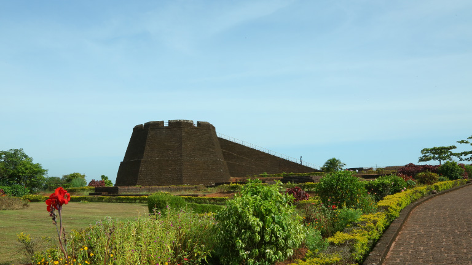

Geographic and Demographic
Geographic and Demographic
To its south is the Kannur District renowned for its ritual arts like Theyyam. Dakshina Kannada district of Karnataka known for its Yakshagana dance forms the northern boundary. The mighty Western Ghats forms a wall along the eastern side. The western side is eternally caressed by the supple hands of Arabian Sea. Covering an area of 1992 km² the district is home to 1,203,342 people (according to 2001 census). There are two taluks in Kasaragod, namely Kasaragod and Hosdurg, and both are municipalities. Seventy-five villages and thirty-nine panchayats make this district which is further subdivided into six administrative segments called development blocks. These six development blocks are Manjeshwar, Kasaragod, Kanhangad, Nileshwar, Parappa and Karadukkal. Just like the thirteen other states of Kerala Kasaragod also has a high literacy rate.
History
From time immemorial Kasaragod has been well-known to the world outside. But very few studies and researches are done regarding the history of Kasaragod. That few studies hail the diversity of this place. Being an important trade centre the place has lured travellers from different parts of the world especially the Arabs and Europeans. The pamphlets and descriptions written by these adventurous travellers about the cultural and economic diversity of Kasaragod are the only sources available to us. Between the 9th and 14th centuries the place was visited by many Arab travellers. The Arabs who frequented this place called it by the name Harkiwilla.
Languages
As far as language is concerned Kasaragod occupies a unique position in the map of Kerala. There are as many as seven languages used actively by a considerable number of people in Kasaragod. Though the administrative language is Malayalam, Tulu, Beary bashe, Kannada, Marathi and Konkani are also spoken. Furthermore there are ever so many dialects and tribal languages that augment the cultural resplendence of Kasaragod. The version of Malayalam spoken here varies a lot from the standard Malayalam and is generally considered difficult for the people from southern Kerala. It is often referred to as Kasrod Malayalam. Unlike the other Dravidian languages it shows little influence of the Sanskrit language. Studies in this idiom have been useful in knowing the nature of evolution of the South Indian languages.
Tulu Nadu

Tulu Nadu, the land of tulu speaking people spreads over to parts of present Karnataka and Kerala. This region consists of the Dakshina Kannada and Udupi districts of Karnataka and the northern parts of the Kasaragod district of Kerala up to Chandragiri River.
Tuluva, the ethnic group adds up to the majority of the population in this region. The Tuluvas are mostly concentrated in the coastal areas. Konkanis who migrated from Goa, the smallest state in India are the next major ethnic group here.
Tulu Nadu sprawls over an area of 8,441 km2 (3,259 sq mi) and is bounded on the west by the Arabian Sea and on the east by the Western Ghats.Tulu Nadu has a tropical climate and it experiences heavy rainfalls during the Monsoon season.